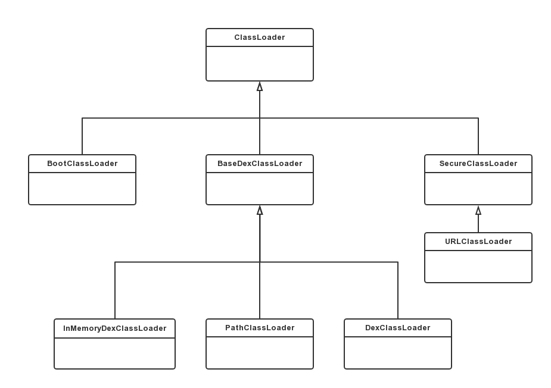

Java类加载器
每个类有自己的类加载器，用户也可以自定义类加载器，同一个类文件被不同加载器加载后他们也不是同一个类，使用 isInstance() 等方法将会得到 false。Java类加载机制相关见：Java类加载机制。
Android类加载器
概述

简单介绍一下部分类加载器：
- ClassLoader: 抽象类，其中定义了 ClassLoader 的主要功能，子类重写 findClass 方法即可。
- BootClassLoader: 在 ClassLoader.java 中，使用默认修饰符，因此我们无法直接访问到它。它加载的是系统类，如 HashMap, Intent, Activity 等。
- BaseDexClassLoader: 是 PathClassLoader 和 DexClassLoader 的父类，其内有一个 DexPathList 属性，实现了 findClass 方法逻辑，PathClassLoader 和 DexClassLoader 都只是在构造函数上对其做了简单封装而已。
- PathClassLoader: 它是 App 加载自身 Dex 文件所用到的类加载器，如 MainActivity, AppCompatActivity 等，其 parent 是 BootClassLoader。
- DexClassLoader: 可以加载 dex 或 apk 等文件，可用于执行动态加载，因此很多插件化方案都是采用 DexClassLoader。
相关参数：
- dexPath: 包含类或者资源的
.jar/.apk/.dex等路径，如果是多个路径，则用:分隔。 - optimizedDirectory: 在 API 26(Android 8.0)的版本中，它表示 odex(optimized dex) 读写存放目录，如果传 null 则表示使用系统默认的目录来存储。自 Android 8.0 起，这个参数已经被弃用，不再生效，使用系统默认的目录。
- librarySearchPath: native 库文件存放目录，多个库文件则用
:分隔。 - parent: 父类加载器。
- isTrusted: 当前加载的 dex 是否受信任，如果受信任则可以访问平台隐藏的API，默认为 false。
ClassLoader
1 | public abstract class ClassLoader { |
BaseDexClassLoader
1 | public class BaseDexClassLoader extends ClassLoader { |
BaseDexClassLoader 中有一个 DexPathList 类的 pathList 成员变量，它表示 dexPath 下的 .dex 列表。
PathClassLoader
1 | public class PathClassLoader extends BaseDexClassLoader { |
PathClassLoader 构造函数很简单，直接调用父类 BaseDexClassLoader 的构造函数。第二个构造参数始终是 null，表示 optimizedDirectory 始终为 null。
DexClassLoader
1 | public class DexClassLoader extends BaseDexClassLoader { |
DexClassLoader 跟 PathClassLoader 相似。和前面一样，第二个参数 optimizedDirectory 也从 Android 8.0 开始弃用，不再有效。
实例
1 | public class MainActivity extends AppCompatActivity { |
输出：
1 | HashMap: java.lang.BootClassLoader |
DexPathList
1 |
|
- Element 用来描述一个 dex 文件所代表的元素。字段 dexElements 是 dex 文件元素列表，通过 makeDexElements() 方法来初始化。
- NativeLibraryElement 用来描述一个库文件所代表的元素，字段 nativeLibraryPathElements 则为库文件元素列表，通过 makePathElements 方法来初始化。
热修复/插件化原理
类加载过程：以 PathClassLoader 加载为例，它会调用父类的 ClassLoader.loadClass() 方法，这个方法在上面已经看了，它遵循双亲委派原则，当 parent 加载不到时则调用自身的 findClass 方法，其父类加载器也是这个逻辑。因此会调用到 BaseDexClassLoader.findClass() 方法，这个方法会借助 DexPathList.findClass() 方法来加载。最终会调用 native 方法来查找 .dex 文件中相应的类，并在 native 层创建目标类的对象并添加到虚拟机列表。
在 DexPathList.findClass() 过程，一个Classloader可以包含多个dex文件，每个dex文件被封装到一个Element对象，这些Element对象排列成有序的数组dexElements。当查找某个类时，会遍历所有的dex文件，如果找到则直接返回，不再继续遍历dexElements。也就是说当两个类不同的dex中出现，会优先处理排在前面的dex文件，这便是热修复的核心精髓，将需要修复的类所打包的dex文件插入到dexElements前面。
热修复示例
此处反射获取PathClassLoader的过程与Android启动Application原理相关，具体过程可见：Android-Application，在理解了这部分源码后，便可知道下面为何要通过反射LoadedApk来获取PathClassLoader了。
反射工具类
1 | public final class ReflectUtils { |
修复工具类
1 | public class FixDexUtil { |
使用方法
1 | public class PatchApplication extends Application { |
需要修复的工具类：
1 | // 修复前 |
- 首先在手机上安装修复前的版本，调用Util.test()，会输出
first publish.； - 然后修改Util类，打包成apk，也可以只将Util类单独打包成dex，push到
/data/data/pkg/files/patch下，由于我的测试机已经root，所以直接使用这个目录，否则可以添加从sd卡拷贝到私有目录的逻辑； - 重启后会加载修复包，多输出一行
patch publish.。 - 打包成dex的命令：
dx --dex --output=util.dex com\hearing\gopatch\Util.class。